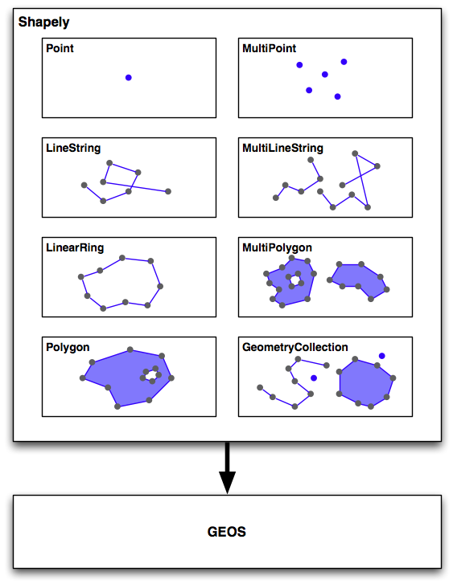
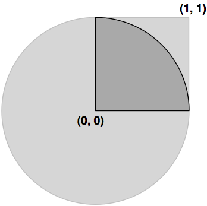

分析和处理地理空间数据#
Analyzing and manipulating geospatial data
由于地理空间数据与点、线和多边形等几何特征相关，因此您经常需要使用这些几何特征执行各种计算。幸运的是，有一些非常强大的工具可以做到这一点。出于我们将很快描述的原因，在 Python 中执行此类计算几何的首选库是 Shapely。
Because geospatial data works with geometrical features such as points, lines, and polygons, you often need to perform various calculations using these geometrical features. Fortunately, there are some very powerful tools for doing exactly this. For reasons we will describe shortly, the library of choice for performing this type of computational geometry in Python is Shapely.
Shapely#
Shapely
Shapely 是一个用于处理和分析二维地理空间几何图形的 Python 包。Shapely 基于 GEOS 库，该库使用 C++ 实现各种地理空间数据操作。GEOS 本身基于一个名为 Java Topology Suite 的库，该库为 Java 程序员提供相同的功能。Shapely 为 GEOS 提供了一个 Pythonic 接口，让您可以轻松地直接从 Python 程序中使用这些操作。
Shapely is a Python package for the manipulation and analysis of two-dimensional geospatial geometries. Shapely is based on the GEOS library, which implements a wide range of geospatial data manipulations in C++. GEOS is itself based on a library called the Java Topology Suite, which provides the same functionality for Java programmers. Shapely provides a Pythonic interface to GEOS which makes it easy to use these manipulations directly from your Python programs.
设计#
Design
Shapely 库的组织结构如下：
{kind=link}
Shapely 的所有功能都建立在 GEOS 之上。事实上，Shapely 需要在运行之前安装 GEOS。
Shapely 本身包含八个主要的类，表示不同类型的几何形状：
Point 类表示空间中的单个点。点可以是二维的 (x, y)，也可以是三维的 (x, y, z)。
LineString 类表示一系列连接在一起的点，形成一条线。LineString 可以是 简单的 （没有交叉的线段），也可以是 复杂的 （其中两个线段在 LineString 中交叉）。
LinearRing 类表示一条以起点结束的线段。LinearRing 中的线段不能交叉或相接触。
Polygon 类表示一个填充区域，通常可以包含一个或多个“孔”。
MultiPoint 类表示一个点的集合。
MultiLineString 类表示多个 LineString 的集合。
MultiPolygon 类表示多个 Polygon 的集合。
GeometryCollection 类表示任何点、线、线环和多边形的集合。
除了能够表示这些不同类型的几何图形，Shapely 还提供了许多方法和属性，用于操作和分析这些几何图形。例如，LineString 类提供了一个 length 属性，表示构成 LineString 的所有线段的长度，以及一个 crosses() 方法，如果两个 LineString 交叉，返回 true。其他方法允许你计算两个多边形的交集、扩张或侵蚀几何图形、简化几何图形、计算两个几何图形之间的距离，并构建一个包围给定几何图形列表中所有点的多边形（称为 convex_hull 属性）。
需要注意的是，Shapely 是一个 空间 操作库，而不是地理空间操作库。它没有地理坐标的概念。相反，它假设在操作之前，地理空间数据已被投影到二维笛卡尔平面上，然后结果可以在需要时转换回地理坐标。
The Shapely library is organized as follows:
All of Shapely’s functionality is built on top of GEOS. Indeed, Shapely requires GEOS to be installed before it can run.
Shapely itself consists of eight major classes, representing different types of geometrical shapes:
The Point class represents a single point in space. Points can be two-dimensional (x, y), or three-dimensional (x, y, z).
The LineString class represents a sequence of points joined together to form a line. LineStrings can be simple (no crossing line segments) or complex (where two line segments within the LineString cross).
The LinearRing class represents a line string which finishes at the starting point. The line segments within a LinearRing cannot cross or touch.
The Polygon class represents a filled area, optionally with one or more “holes” inside it.
The MultiPoint class represents a collection of Points.
The MultiLineString class represents a collection of LineStrings.
The MultiPolygon class represents a collection of Polygons.
The GeometryCollection class represents a collection of any combination of Points, LineStrings, LinearRings, and Polygons.
As well as being able to represent these various types of geometries, Shapely provides a number of methods and attributes for manipulating and analyzing these geometries. For example, the LineString class provides a length attribute that equals the length of all the line segments that make up the LineString, and a crosses() method that returns true if two LineStrings cross. Other methods allow you to calculate the intersection of two polygons, dilate or erode geometries, simplify a geometry, calculate the distance between two geometries, and build a polygon that encloses all the points within a given list of geometries (called the convex_hull attribute).
Note that Shapely is a spatial manipulation library rather than a geospatial manipulation library. It has no concept of geographical coordinates. Instead, it assumes that the geospatial data has been projected onto a two-dimensional Cartesian plane before it is manipulated, and the results can then be converted back into geographic coordinates if desired.
示例代码#
Example code
以下程序创建了两个 Shapely 几何对象，一个圆形和一个正方形，并计算它们的交集：
{kind=link}
交集将是一个四分之一圆形的多边形，如前图中的深灰色部分所示：
import shapely.geometry
pt = shapely.geometry.Point(0, 0)
circle = pt.buffer(1.0)
square = shapely.geometry.Polygon([(0, 0), (1, 0),
(1, 1), (0, 1),
(0, 0)])
intersect = circle.intersection(square)
for x,y in intersect.exterior.coords:
print x,y
注意，圆形是通过创建一个点几何对象并使用 buffer() 方法来构建的，该方法创建了一个表示圆形轮廓的多边形。
The following program creates two Shapely geometry objects, a circle and a square, and calculates their intersection:
The intersection will be a polygon in the shape of a quarter circle , as indicated by the dark grey portion of the preceding image:
import shapely.geometry
pt = shapely.geometry.Point(0, 0)
circle = pt.buffer(1.0)
square = shapely.geometry.Polygon([(0, 0), (1, 0),
(1, 1), (0, 1),
(0, 0)])
intersect = circle.intersection(square)
for x,y in intersect.exterior.coords:
print x,y
Notice how the circle is constructed by taking a Point geometry and using the buffer() method to create a Polygon representing the outline of a circle.
文档#
Documentation
Shapely 附带了出色的文档，其中包含详细的描述、扩展的代码示例和许多插图，清楚地展示了各种类、方法和属性的工作原理。
Shapely 文档完全独立；无需参考 GEOS 文档或其所基于的 Java 拓扑套件，除非您特别想了解这些库中的工作原理。唯一的例外是，如果您从源代码编译 GEOS 并且无法使其正常工作，则可能需要参考 GEOS 文档。
Shapely comes with excellent documentation, with detailed descriptions, extended code samples, and many illustrations that clearly show how the various classes, methods, and attributes work.
The Shapely documentation is entirely self-contained; there is no need to refer to the GEOS documentation, or to the Java Topology Suite it is based on, unless you particularly want to see how things are done in these libraries. The only exception is that you may need to refer to the GEOS documentation if you are compiling GEOS from source and are having problems getting it to work.
可用性#
Availability
Shapely 可以在所有主要操作系统上运行，包括 MS Windows、Mac OS X 和 Linux。Shapely 的官方网站可以在以下地址找到：
http://pypi.python.org/pypi/Shapely
该网站提供了你所需要的一切，包括 Shapely 库的文档和下载资源，既有源代码形式，也有适用于 MS Windows 的预编译二进制文件。
如果你在 Windows 计算机上安装 Shapely，预编译的二进制文件已经包含了 GEOS 库。否则，你需要在使用 Shapely 之前先安装 GEOS。
备注
确保你安装了 Shapely 版本 1.2 或更高版本；你需要这个版本才能按照本书中的示例进行操作。
GEOS 库的网站地址为：
在 Unix 系统中安装 GEOS，你可以从 GEOS 网站下载源代码并自行编译，或者可以安装适合的 RPM 或 APT 包，这些包中已经包含了 GEOS。如果你使用的是 Mac OS X，你可以尝试自行下载并构建 GEOS，或者安装预构建的 GEOS 框架，该框架可以从以下网站获得：
http://www.kyngchaos.com/software/frameworks
备注
如果你已经从上述网站安装了 “GDAL Complete” 包，你的 Mac OS X 计算机上已经安装了 GEOS。
安装 GEOS 后，你需要下载、编译并安装 Shapely 库。在 Mac OS X 上进行安装可能会有些复杂，因此你可能会发现以下博客文章非常有用：
Shapely will run on all major operating systems, including MS Windows, Mac OS X, and Linux. Shapely’s main website can be found at:
http://pypi.python.org/pypi/Shapely
The website has everything you need, including the documentation and downloads for the Shapely library, in both source code form and prebuilt binaries for MS Windows.
If you are installing Shapely on a Windows computer, the prebuilt binaries include the GEOS library built-in. Otherwise, you will be responsible for installing GEOS before you can use Shapely.
备注
Make sure that you install Shapely Version 1.2 or later; you will need this version to work through the examples in this book.
The GEOS library’s website is at:
To install GEOS in a Unix-based computer, you can either download the source code from the GEOS website and compile it yourself, or you can install a suitable RPM or APT package which includes GEOS. If you are running Mac OS X, you can either try to download and build GEOS yourself, or you can install the prebuild GEOS framework, which is available from the following website:
http://www.kyngchaos.com/software/frameworks
备注
If you’ve installed the “GDAL Complete” package from the above website, you’ll already have GEOS installed on your Mac OS X computer.
After installing GEOS, you need to download, compile, and install the Shapely library. This can be slightly tricky on a Mac OS X computer, so you may find the following blog post useful: